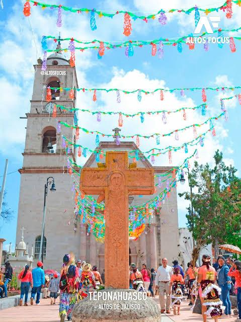

¡Explora lo mejor de nuestra región!
Sumérgete en nuestras tradiciones, sabores, costumbres y rincones maravillosos.
Teponahuasco, una comunidad ubicada en el municipio de Cuquío, Jalisco, a unos 80 km al noreste de Guadalajara, destaca por su rica tradición alfarera que ha perdurado a lo largo del tiempo. Con aproximadamente 1,200 habitantes, la mayoría se dedica a la agricultura, y entre un 20% y 30% de los hogares complementan sus ingresos con la producción de cerámica durante parte del año.
© Teponahuasco jalisco
Agregar Comentario